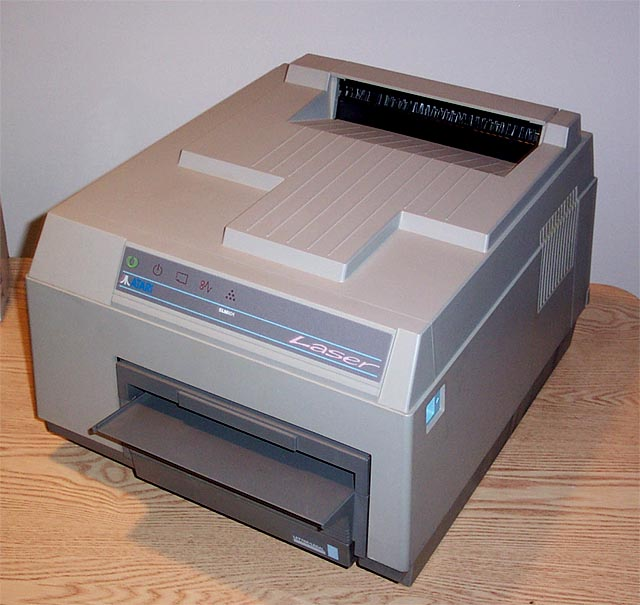
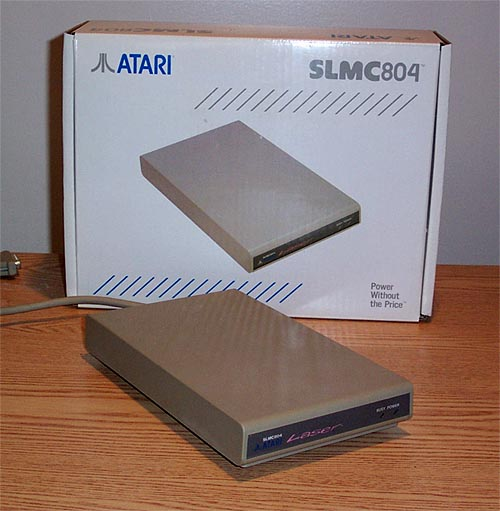
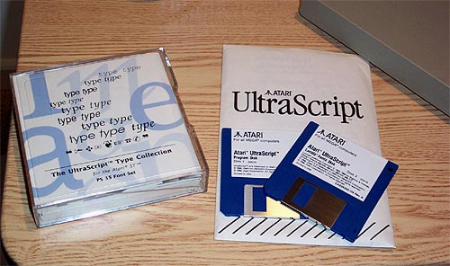

The Atari SLM804
Laser Printer

Atari Corp would take a huge leap
forward in providing periperhal support for its ST line of computer systems
with the introduction of the SLM804 Laserprinter. Released
along with Atari's new MegaST line of computers, the new printer brought
the ST line of computers into the professional level of computer systems
by providing Desktop Publishing printing support.

The true key to the SLM804's speed and
very low cost (nearly 1/3rd the cost of other laser printers) was its design.
Using the built in "ASCI" DMA port of the Atari ST computers and transferring
data into the SLMC804 interface for Postscript processing, the Atari SLM804
was extremely fast, efficient and a far better deal then printers provided
by IBM and Apple. In fact, an Atari Desktop Publishing
system consisting of an Atari Mega ST computer, mono hi-res monitor, SLM804
printer and desktop publishing software cost less then an IBM or Apple
laser printer alone.

|